CrossCopy Enterprise
System Documentation
Version 1.0
CCE Admin
Log in
To log in to the portal, visit the following link: CrossCopy
Portal

Enter your valid email address and password, and click on the
Login button. You will receive an OTP code on your email address.
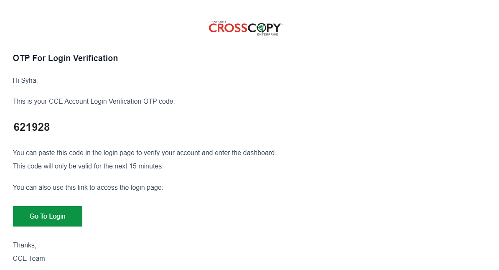
Enter the code in the portal screen and click on the Login button.
If you haven’t received the email, you can request another by clicking on
the Click to resend button below the Login button.

Upon successful login, your dashboard will open.

Reset Password
If you have forgotten your password or just want to reset it, follow these
simple steps to reset your password and regain access to your account
securely. On the main login screen, click on the button next to Forgot
Password (below the Login button).
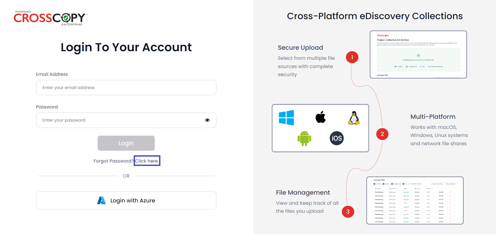
The following screen will open.

Enter your valid email address and click on Confirm. You will
receive an email to reset your password.
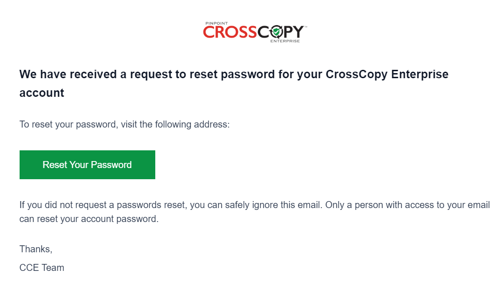
Click on the Reset Your Password button. The following screen will
appear:
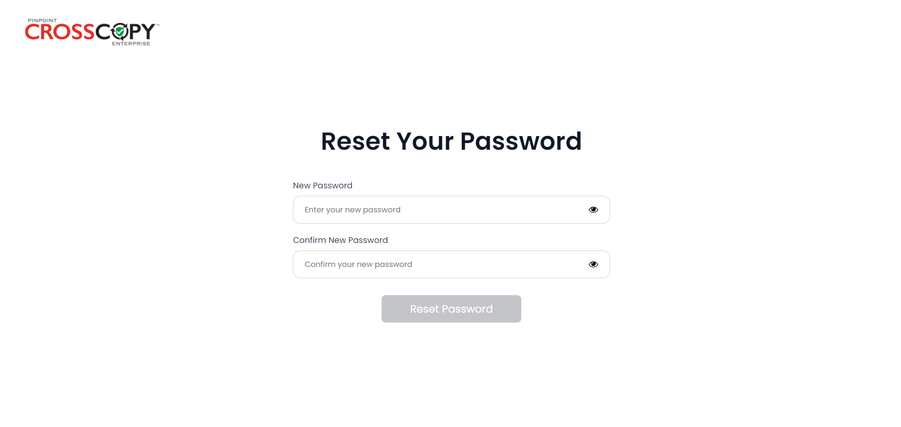
Enter your new password and click on the Reset Password button. You
will be redirected to the main login screen where you can log in with your
email address and new password.
Dashboard
After successfully logging in, you will be able to see your dashboard. It
will look something like this:
Sidebar
On the left of the screen you will see a navigation bar (sidebar).

You can navigate through the entire portal using the sidebar. The sidebar
has the following buttons:
- Overview - to view the admin dashboard
- Projects - to view and manage all the projects you have created
-
User Management - to view and manage all the users you have created
-
Billing -
- To view your billing status
- To view and manage your profile
- Logout - to log out of the system
Profile
Click on your avatar on the top right corner to access and manage your
profile.
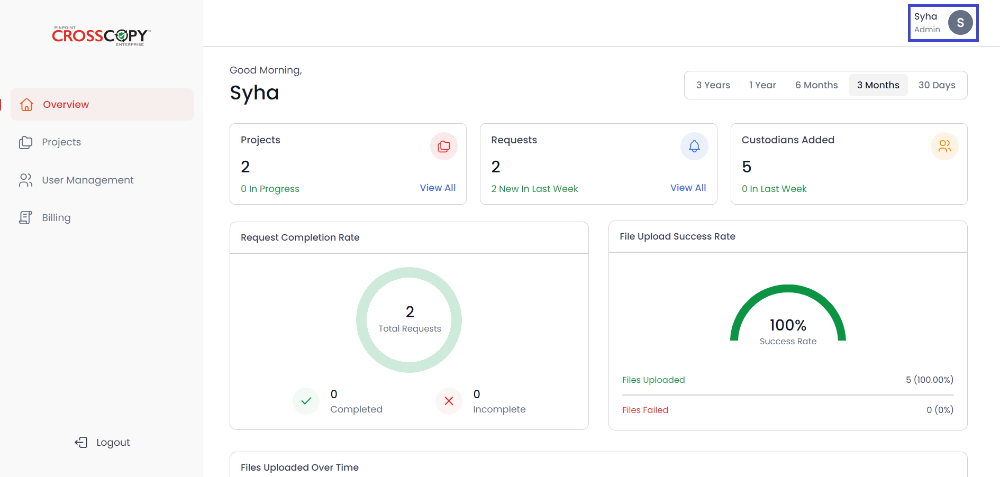
The profile page will look something like this:
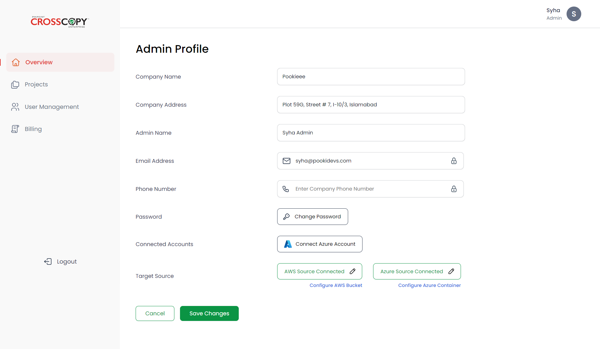
You can perform multiple actions on this page, including
-
Manage your personal information - you can edit any information you want
-
Change your password - if you wish to update your password, you can do
that by clicking on the Change Password button.
-
Connect your Azure account - you can also quickly connect your Azure
account from here by clicking on the
Connect Azure Account button. This will let you sign in to
CrossCopy directly from your Azure account. The image below shows the
main login screen with the option to log in via Azure.

-
Set up target sources - you can also set up your target sources on the
profile page. Target sources are where your projects and files are
stored. There are 2 types of target sources:
- AWS buckets,
- Azure Containers
If you haven’t set up any resources, or created any project yet,
you will have to set up your target sources.
 Click on the Setup button for any source of your choice. You will
be prompted to add details of the source.
Click on the Setup button for any source of your choice. You will
be prompted to add details of the source.
|
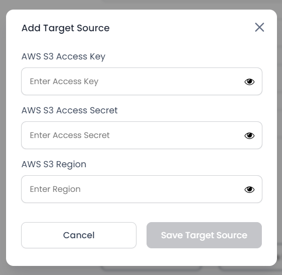
\
Set up AWS Bucket
|
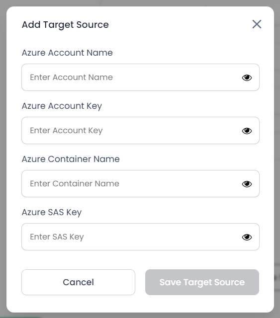
Set up AWS Bucket
|
Add all the required information and click on the
Save Target Source button to configure your resource. Now you
can configure your target sources for your projects by clicking on the
Configure AWS Bucket or
Configure Azure Container buttons.

Configure AWS Bucket
You will be prompted to either select an existing bucket or create a
new one:
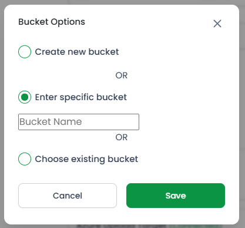
If you select Choose existing bucket, you will see a list of
available options that you can choose from. Select any of your choices
and click on the Save button.

However, if you choose to create a new bucket, select that option and
click on the Save button.
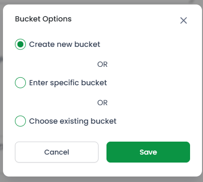
A new bucket will be automatically created and selected for you.
Configure Azure Containers
You will be prompted to select a container from the list of available
containers. Select the one of your choice and click on the
Save button:
 Please note that even after setting up and configuring your source,
whenever you click on the edit button, you will see all the fields
empty. This does not indicate that your source is no longer available;
rather, the data is not shown to maintain security.
Please note that even after setting up and configuring your source,
whenever you click on the edit button, you will see all the fields
empty. This does not indicate that your source is no longer available;
rather, the data is not shown to maintain security.
After you have set up and configured your target sources, and/or made any
updates to your profile, click on the Save Changes button on the
profile page.
However, if you do not want to commit your changes, click on the
Cancel button to go back to the main dashboard without making any
changes to your profile.
Dashboard - Date Filters
You can use date filters to view your data at different intervals of time.
You can view your data on the dashboard by
- 3 years
- 1 year
- 6 months
- 3 months
- 30 days

Dashboard - Overview Cards
The top cards show a quick overview of essential statistics:
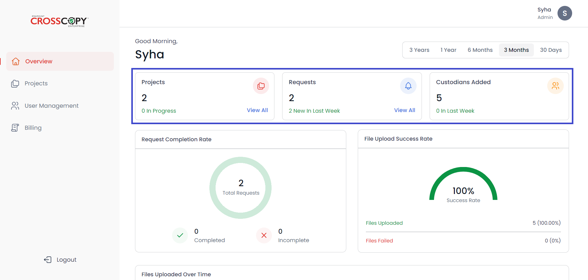
-
Projects - the card shows
- Total number of projects created
- Total number of projects in progress
- A button to view all of your projects
-
Requests - the card shows
- Total number of requests created
- Total number of new requests created
- A button to view all of your requests
-
Custodians Added - the card shows
- Total number of custodians added
- Total number of new custodians added
- A button to view all of your custodians
Dashboard - Request Completion Rate
This card consists of data showcasing the completion rate of all of your
requests:
- Total number of requests created
- Total number of requests completed
-
Total number of requests marked as incomplete due to no files uploaded
- The pie chart shows the rate of requests completed
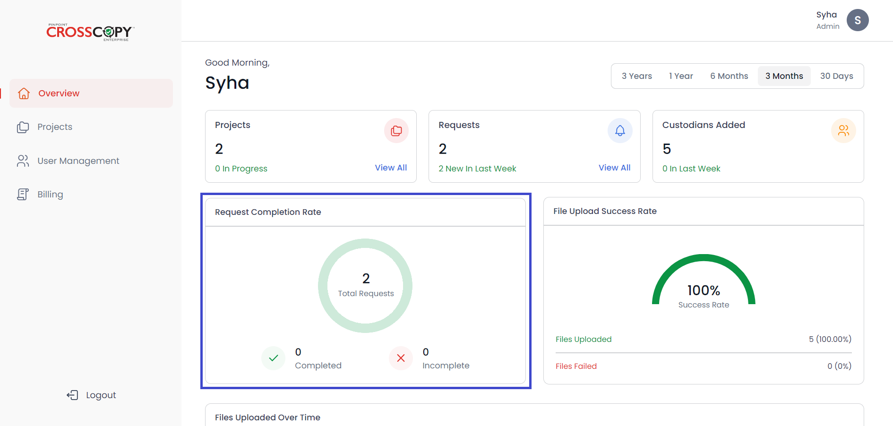
Dashboard - File Upload Success Rate
The card displays statistics related to the success rate of file uploads,
including both the number and percentage of files uploaded successfully,
as well as those that failed to upload. This information is also
represented using a chart.
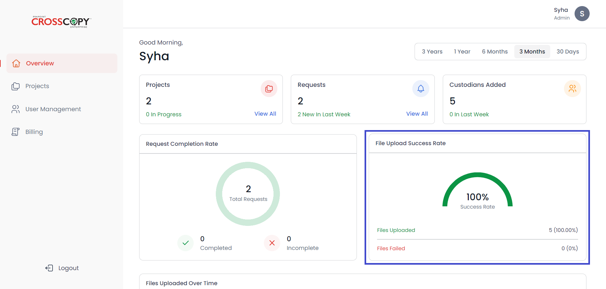
Dashboard - Files Uploaded Over Time
This section displays data regarding files uploaded over a period of time.
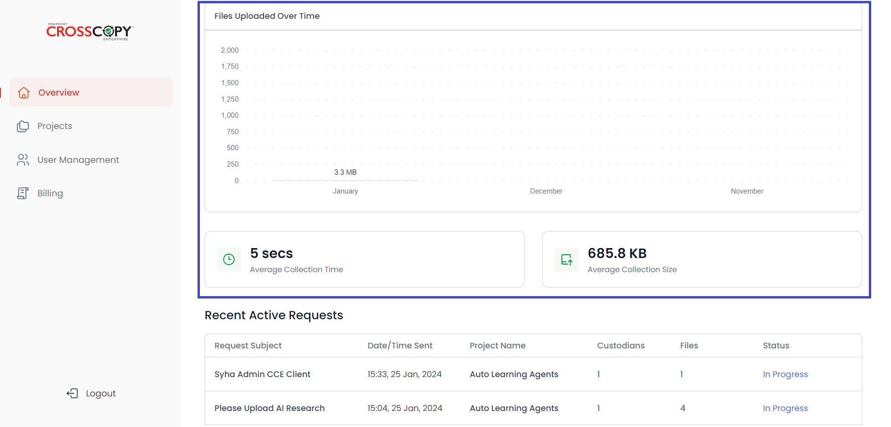
-
The bar chart displays the total size of files uploaded every month
-
The Average Collection Time card shows the average time taken for file
upload
-
The Average Collection Size card shows the average size of the files
uploaded
Dashboard - Recent Active Requests
The Recent Active Requests table displays information about the requests
generated recently that are still active.

The information includes
-
The request’s subject - clicking on the subject will redirect you to the
detailed view of the request
- Date/time at which the request was generated
-
The name of the project in which the request is generated - clicking on
the project’s name will redirect you to the detailed view of the project
-
The number of custodians in the respective request - clicking on the
number will redirect you to the detailed view of the custodians
-
The number of files in the respective request - clicking on the number
will redirect you to the detailed view of the files uploaded
- The status of the request
Set up a New Project
To create a new project, you will need to go to the Projects page.
To access the Projects page, click on the Projects option from the
navigation bar on the left-hand side.
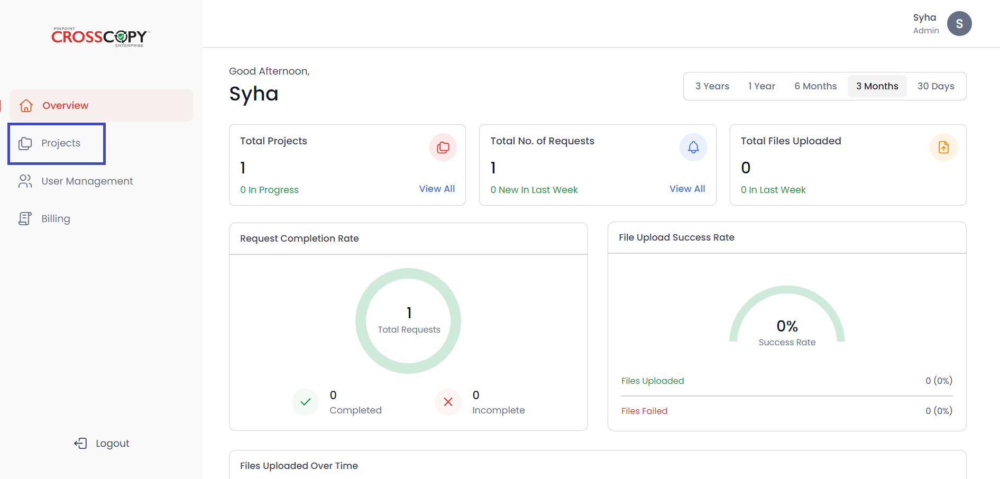
You will see a similar screen.
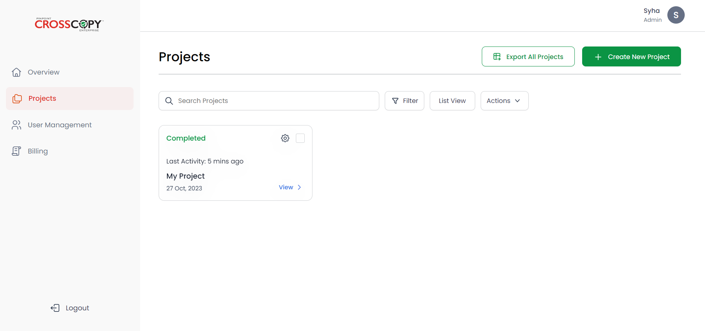
Click on the Create New Project button in the top right corner to
initiate a new project. A similar screen will appear.

Fill in all the required information, i.e.:
-
Project Name: The name you want to give to your new project
-
Project Description: Describe your project and what it aims to
accomplish.
-
Project Settings:
-
Upload Sources: Select the sources that your custodians can
upload files from, such as selecting Local File will allow the
custodian to upload files directly from their system, and Google
Drive will allow the custodian to upload files via their Google
Drive.
-
Target Source: Select the storage location you wish the files
to be uploaded to.
-
AWS Bucket/Azure Container: Select or add information about
your target source.
-
Enable File Verification: Select to enable verification of
the files uploaded by custodians.
After you have added all the information, the Create Project button
will become active. Click on the button to create the project.
If
you wish to discard the project, click on the Cancel button to
cancel creating the project. No information will be saved in this case.
After you have successfully created your project, it will appear in
your Projects view with a status of Not Started indicating that it
currently does not have any custodians and hence no activity performed on
it.
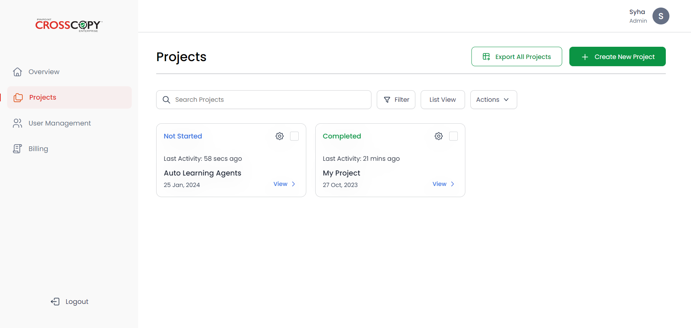
For each project:
-
Click on the View button to view the details of the project.
- Click on the gear icon to edit the project details.
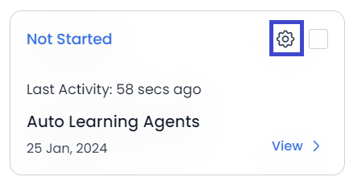
Configure AWS Buckets and Azure Containers
You can select your target source to be either AWS or Azure.
AWS Buckets
For AWS, you need to select a bucket to be the source. Select AWS and
click on the pencil icon to edit and select a bucket other than the
default one:

You will be prompted to either select an existing bucket or create a new
one:
If you select Choose existing bucket, you will see a list of
available options that you can choose from. Select any of your choice and
click on the Save button.
You will now be able to see the selected bucket name in the target source.

However, if you choose to create a new bucket, select that option and
click on the Save button.
A new bucket will be automatically created and selected for you.
Azure Containers
If you choose Azure as your target source, you will need to select the
container in which the files of the project will be uploaded.
Select
Azure and click on the pencil icon to edit and select a container
other than the default one:
You will be prompted to select a container from the list of available
containers. Select the one of your choice and click on the
Save button:
You will now be able to see the selected container name in the target
source.

Add Custodians to a Project
Custodians are the users who will upload files to the project. So for each
project, you will have to add custodians who will have access to add files
to your project.
To add custodians to a project, open the project
details by clicking on the View button. Click on the
Add Custodians button in the detail view.

You can add custodians one by one by filling in the information on the
portal, or add in bulk by importing a CSV file.
To add custodians
one by one, fill in the required fields:

Once you have filled in the details correctly, the
Add Custodian button will become active. Click on it to add your
custodian.

The newly added custodian will appear on the right side of the screen.
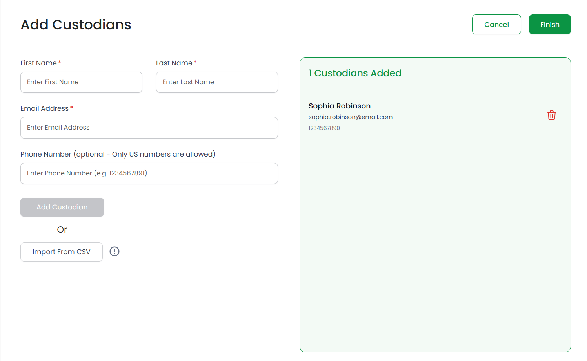
To delete a custodian, click on the red delete button () next to each custodian.
Once you have completed adding the
custodians, click on the Finish button in the top right corner.
Import Bulk Custodians
If you wish to add more custodians, you can continue adding by either
filling in the fields or by importing a CSV. To import from CSV, you will
have to follow a template, which can be accessed by clicking on the
information button -> Sample CSV File.
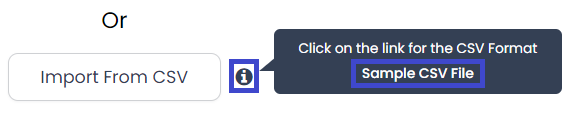
Once you have completed adding the custodians, click on the
Finish button in the top right corner.
Initiate a Request to Collect Files
After you have added all your custodians and clicked on
Finish button, you will see a prompt asking to generate a new
request:

You will then be asked to create a new request by filling in the required
details. After adding the request subject, request message, and selecting
the custodians that you wish to notify, click on the Send button.
The selected custodians will receive the request via Email or Phone Number
as per your choice. As we had selected Email, the following email was
received by the custodian:

Consequently, you will be able to see the generated requests in your
project’s detailed view.

To view the custodians of the project, click on a request. A screen will
open showing all the custodians of that project, along with an option to
resend the notification in case a custodian has missed it.
Click on the custodian’s name to view their details.

Monitoring Custodian Activities
To monitor a custodian’s activities, go to the custodian’s detailed view.

On this screen, you can view the following details of the custodian:
- Custodian’s name
- Custodian’s email address
- Custodian’s phone number
Moreover, you can see the Average Collection Time and
Total Uploaded Size of the custodian, i.e. the average time it took
the custodian to upload files, and the total size of all the files
uploaded by the custodian, respectively.

You can also see the Total Files Uploaded by the custodian, along
with how many of those were uploaded successfully and how many failed to
upload.

The Jobs table showcases the jobs carried out by the custodian,
i.e. files uploaded against the request.

The following information is displayed in the table:
- Number of files uploaded in each job
- The start time of each job
- Source of files for each job
- Status of each job
- Note added by the custodian on each job
You can select jobs to perform actions on them such as Create Verification
Log, etc.

-
Create File List
Select the Create File List option to
download a CSV containing the list and details of all the files in the
selected jobs.
-
Create Verification Log
Select the Create Verification Log
option to download a CSV containing the log of all the files in the
selected jobs.
-
Chain of Custody
Select the Chain of Custody option to
download a CSV containing the chain of custody of all the files in the
selected jobs.
Click on the No. of Files for a specific job to open a detailed
view of the job.
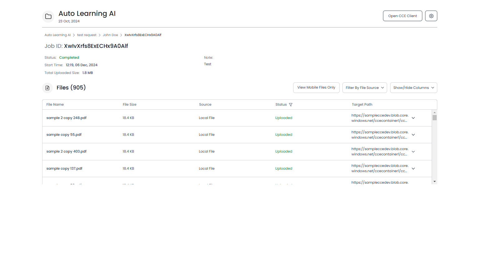
This view displays all the details of the selected job, including:
- Job’s ID
- Status of the job
- Start time in time and date format
- Note added by the custodian on the job
- The total size of all the files uploaded against the job
The Files table shows details of all the files uploaded against the
job. You can apply filters on the table to view files by the uploaded
source, such as Local System, Google Drive, etc. Moreover, you can add and
remove columns from the table according to your needs.

For example:
I have hidden the target path but want to see Hash Type and Hash Match. So
I’ll uncheck the Target Path checkbox, and mark the checkboxes against
Hash Type and Hash Match.

This is what my table looks like now:

Resend Notifications to Custodian
In
case a custodian has not received a notification, you can resend it by
clicking on the Resend Notification button in the request’s detailed
view.

They will receive the following email
again:

Generate Verification Log
The
Verification log is … // TO ADD BRIEF DESCRIPTION
You can generate
Verification logs for the following:
- Projects
- Requests
- Custodians
- Jobs/Files
You can select all or a few to be included in the log.
Projects
To generate the log of projects, open the Projects page and
select the projects that need to be included in the log.

Click on Actions -> Create Verification
Log.
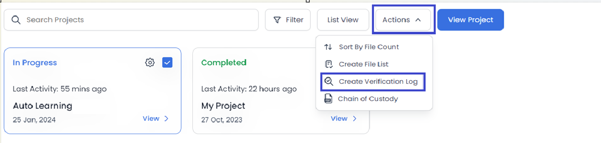
A CSV file will be automatically
downloaded on your system. Open the file to view your log.
Requests
To generate the log of requests, open a project’s detailed view and select
the requests that need to be included in the log.
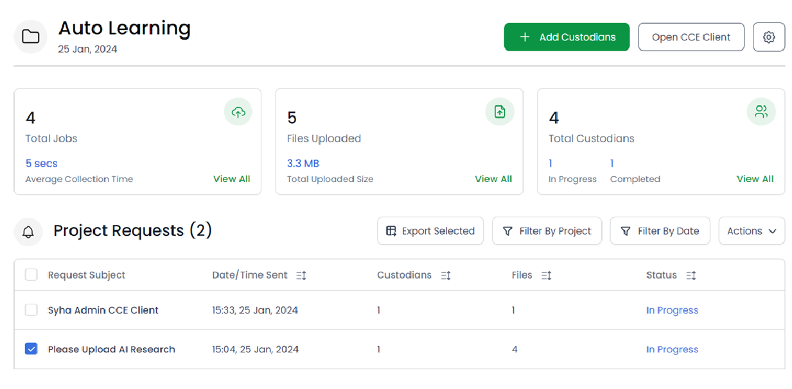
Click on Actions -> Create Verification
Log.

A CSV file will be automatically
downloaded to your system. Open the file to view your log.
Custodians
To generate the log of custodians, open a request’s
detailed view and select the custodians that need to be included in the
log.
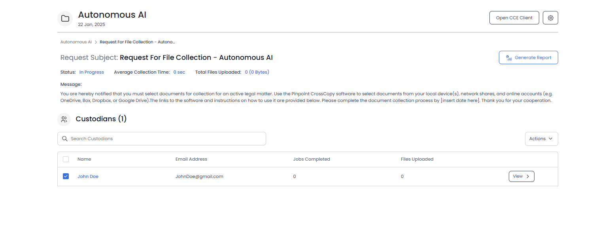
Click on Actions -> Create Verification
Log.
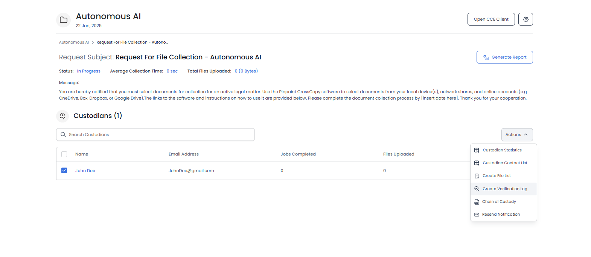
A CSV file will be automatically
downloaded on your system. Open the file to view your log.
Jobs/Files
To generate the log of jobs (and files in them), open a
custodian’s detailed view and select the jobs (files) that need to be
included in the log.

Click on Actions -> Create Verification
Log.
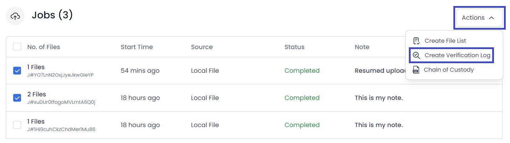 A CSV file will be automatically
downloaded on your system. Open the file to view your log.
Generate Chain of Custody
Chain of Custody is … // TO ADD BRIEF DESCRIPTION
You can
generate Chain of Custody for the following:
- Projects
- Requests
- Custodians
- Jobs/Files
You can select all or a few to be included in the
Chain of Custody.
Projects
To generate the Chain of Custody of
projects, open the Projects page and select the projects that need to be
included in the log.
Click on Actions -> Chain of Custody.
A file preview will open up on your
screen. Click on the Generate PDF button to generate the PDF:
Click on the Open PDF button to open
the PDF in your browser:
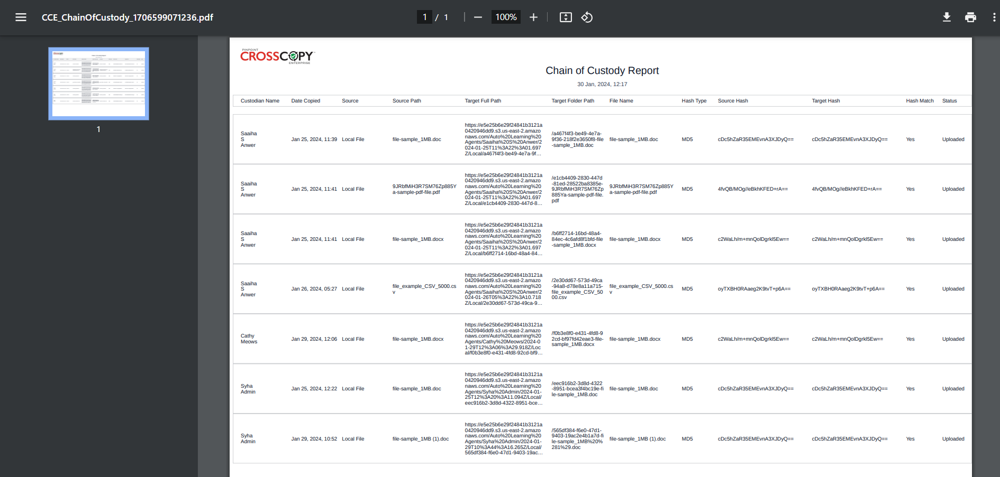
Requests
To generate the Chain of
Custody of requests, open a project’s detailed view and select the
requests that need to be included in the log.
Click on Actions -> Chain of Custody.
A file preview will open up on your
screen. Click on the Generate PDF button to generate the PDF:

Click on the Open PDF button to open
the PDF in your browser:

Custodians
To generate the Chain of
Custody of custodians, open a request’s detailed view and select the
custodians that need to be included in the log.
Click on Actions -> Chain of Custody.

A file preview will open up on your
screen. Click on the Generate PDF button to generate the PDF:
Click on the Open PDF button to open
the PDF in your browser:
Jobs/Files
To generate the log of
jobs (and files in them), open a custodian’s detailed view and select the
jobs (files) that need to be included in the log.
Click on Actions -> Chain of Custody.

A file preview will open up on your
screen. Click on the Generate PDF button to generate the PDF:

Click on the Open PDF button to open
the PDF in your browser:
Export Projects, Requests, Jobs, and Files
You can export your projects, requests, jobs, and files as CSV files
via the respective export buttons.
Export Projects
To export projects, go to your Projects page and click on the Export All
Projects button.

Export Requests
Open your desired
project to view the project requests. You can export a few selected
requests as well as all the requests generated.
To export a specific
request, select the checkbox next to it - an Export Selected button
will appear above the table. Click on the Export Selected button.
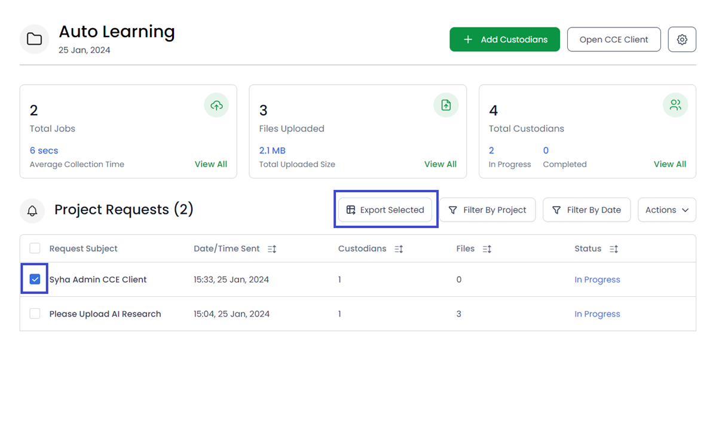
To export all the generated requests,
click on Actions -> Export All Requests.
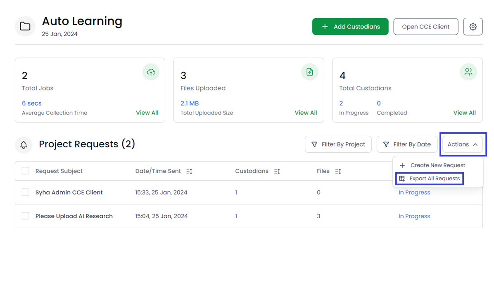
Export Files
To export files of the
custodians’ jobs, click on the respective custodian in a request. You will
be able to see the details of the custodian and their jobs. Select all the
jobs you wish to export the files of by clicking on the checkboxes next to
them, then click on Actions -> Create File List.

Open CCE Client View
As an admin, you
can upload files to your project as a custodian as well. To do this, open
the desired project, and click on the Open CCE Client button.
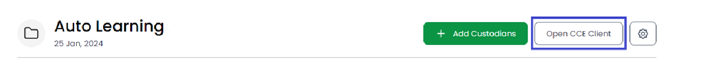
This will open the view of the custodian:

You can drag and drop or upload files,
and add notes like a custodian here. Once you are done, you can click on
the Return to Dashboard button to go back to your admin view.
 You will now also see a request created
in your name.
You will now also see a request created
in your name.

You can carry out all the tasks related
to this request, just as you would with any other.
Monitor Account Usage
To view your account’s usage, you will need to go to the Account
Billing page. To access the Account Billing page, click on the Billing
option from the navigation bar on the left-hand side.

You will see a similar screen.

On this page you will be able to see the
following information:
- Company details
- Type of account, i.e. Demo or Commercial
- The expiry date of the account
- The number of files uploaded
- The total size of the files uploaded
- The number of custodians who have uploaded the files
In addition to viewing the
information above, you can also edit your profile from this page. To do
so, click on the Edit Profile button.
Request Increment of Usage
Quota
If either your account’s expiry date passes, or you exceed any of
your quotas (file count, uploaded size, collected custodians), you will
start seeing a message on the top of your screen indicating that your
license has either expired or reached its maximum limit.

To keep using your account, you will
need to request an increment in your quota or your account’s expiration
date. Go to your Billing page where you will see a message in red at
the bottom.
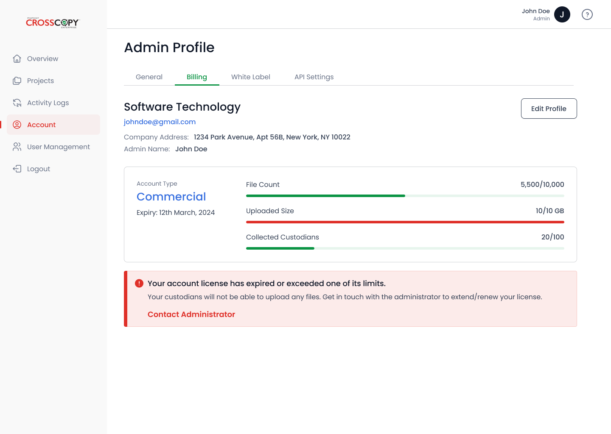
Click on the Contact Administrator button. You will be prompted to provide information to the admin.

Select the restrictions you wish to
renew - I have selected Collected Custodians and Expiry Date.

Enter your message to the admin with
details such as increase custodians quota by 5, and then click on the
Send Message button.
After successfully submitting the above form, you
will be able to see a message on your Billing page, indicating that the
message has been sent to the super admin.
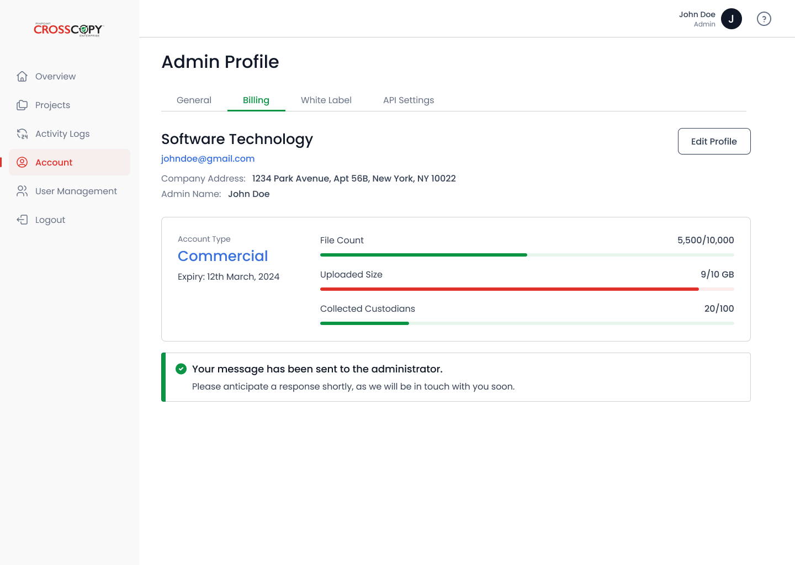
After the admin has updated the
restriction, the yellow message will no longer appear your custodians will
be able to upload their files.
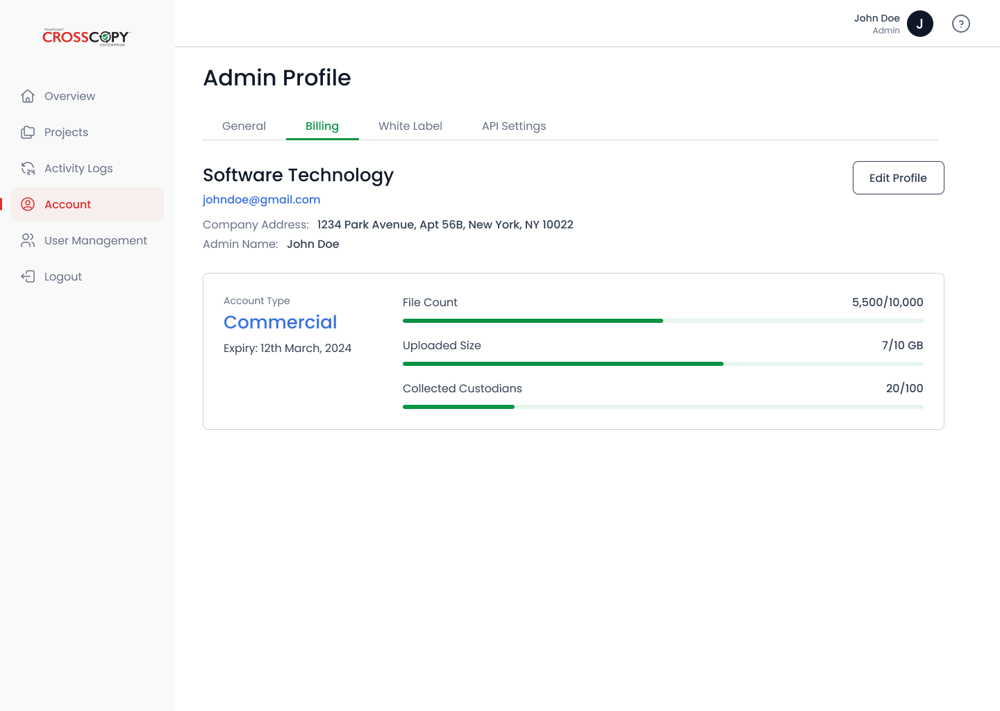
Manage CCE Users
To view and manage
your CCE Users, you will need to go to the User Management page. To
access the User Management page, click on the User Management option from
the navigation bar on the left-hand side.
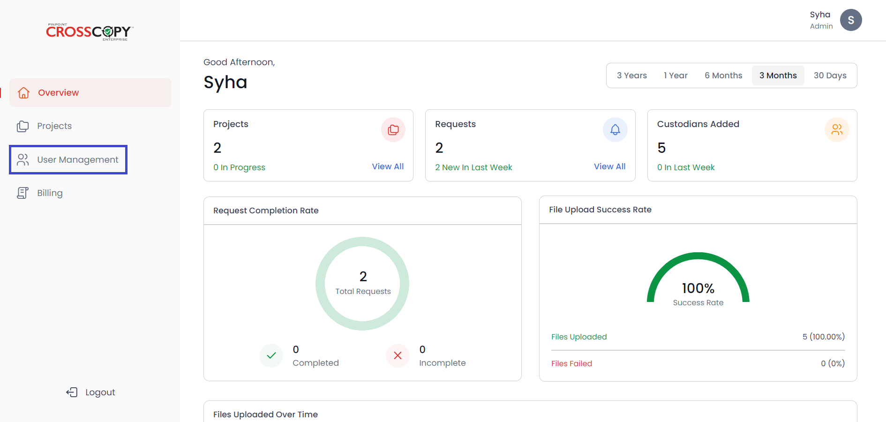
You will see a similar screen.

Create a User
To create a new
user, click on the Create New User button.
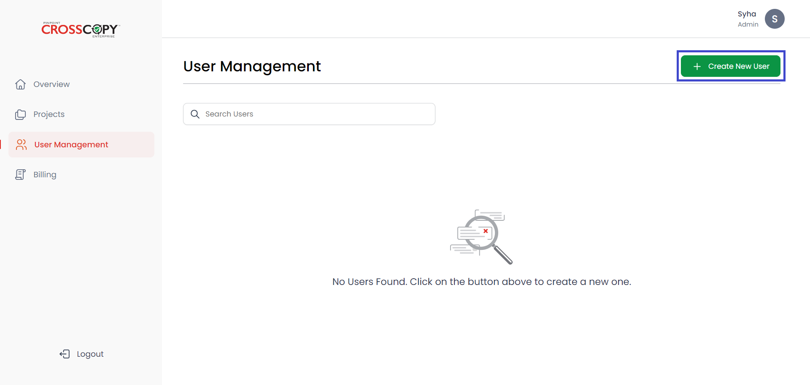
Fill in the required fields and click on
the Create User button.
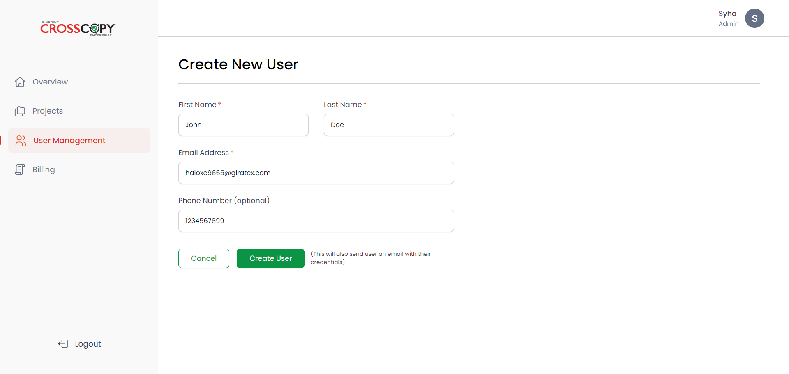
A new user will be created and you will
be able to view their details on the User Management page.
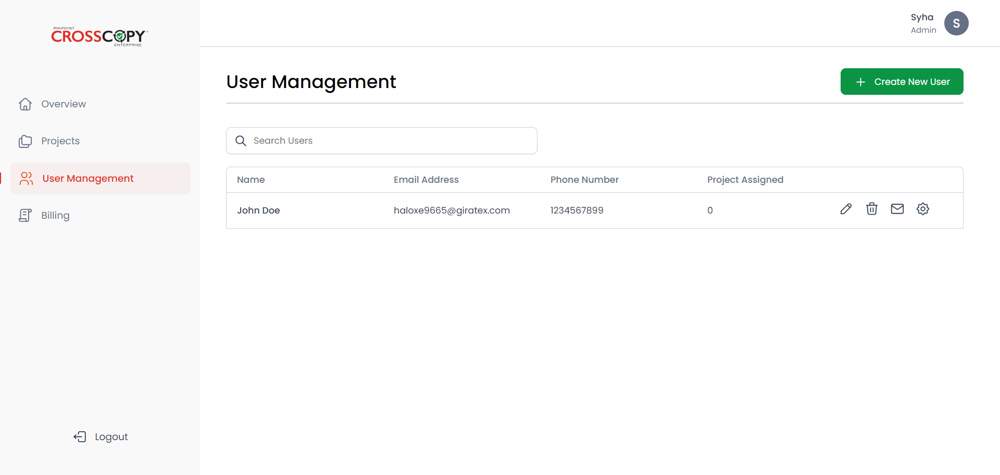
The user will receive a notification via
email containing their login details:

Edit a User
Click on the pencil
icon next to the user to edit their details.
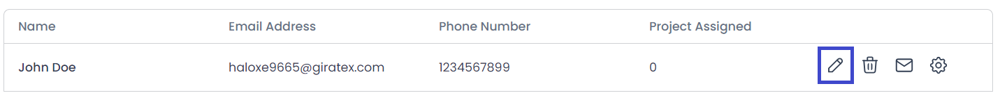
A popup will appear where you can edit
the details of the user. Once you are satisfied with the information,
click on the Save Changes button.

Resend Notification
Click on the
mail icon next to the user to resend a notification containing their login
details.
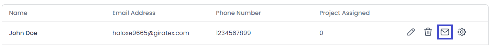
You will be prompted to confirm the
resending of the notification.

Delete a User
Click on the bin
icon next to the user to delete that user.

You will be prompted to confirm the
deletion of the user.
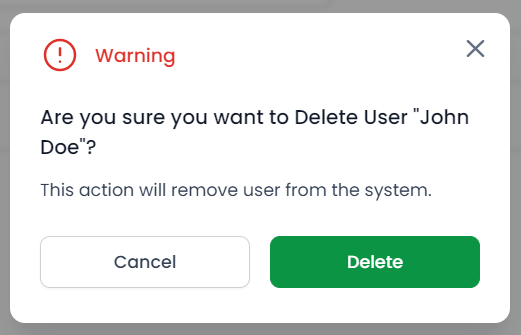
Click on the Delete button to delete
the user. Now, you will no longer be able to see the user in User
Management.
Assign Projects to CCE Users
To assign a project to a
user, click on the gear icon next to their name in User Management.

A popup will appear with a list of the
projects you have created. Select the ones you wish to assign the user to
and click on the Save button.
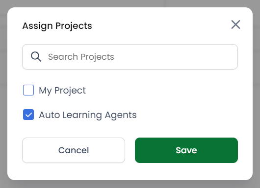
CCE User
Log in
Whenever an admin adds a new user, they will receive an email with login information.
Click on the Login To Your Account button. The main login page will open. Enter your details and click on
the Login button.

You will be prompted to add an OTP code which is shared on your email.

Enter the OTP code and click on the
Login button. If you haven’t received the email, you can request
another by clicking on the Click to resend button below the Login
button.
Upon logging in successfully, you will be redirected to your
dashboard.
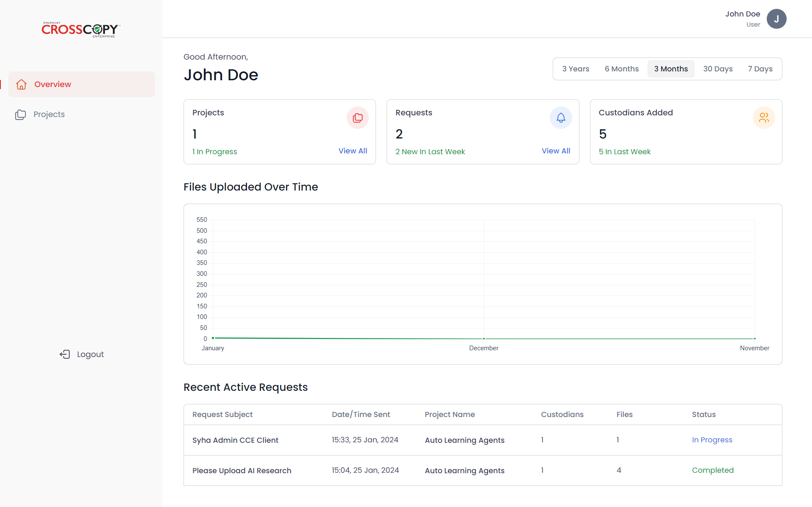
Here, you will be able to see details of
the project(s) assigned to you.
On your dashboard, you can view multiple
statistics such as the total number of projects, requests, and custodians,
along with the sizes of files uploaded over time, recent active requests,
etc.
Upload Files
To upload files to any project, you will first need
to go to the Projects page, by clicking on the Projects option from
the sidebar.

A similar screen will open, displaying
all the projects assigned to you.
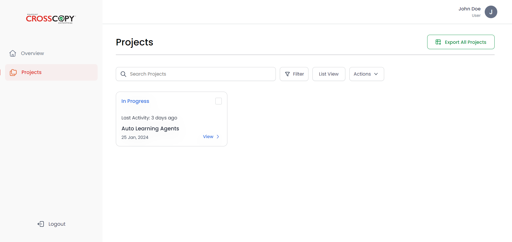
Click on the View button to view the
details of the project.
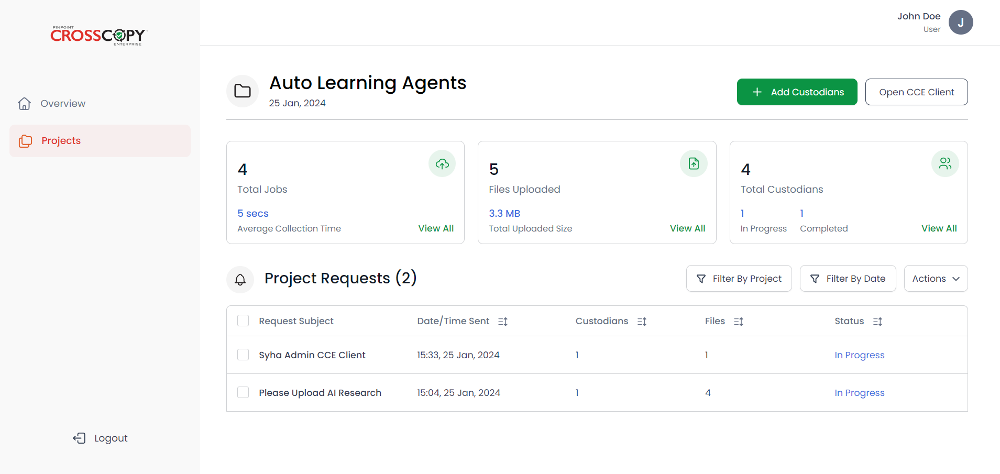
Click on the Open CCE Client button
to open the project in client view.

A similar screen will open:
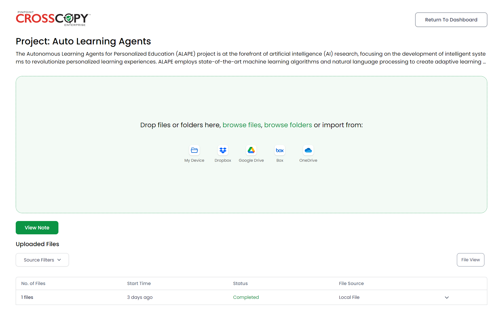
You can drag and drop or upload files,
and add notes like a custodian here. You can either drop files into the
upload box or select any source to upload files from such as My Device,
Dropbox, Google Drive, etc.
Importing from Google Drive
 Importing from Local System
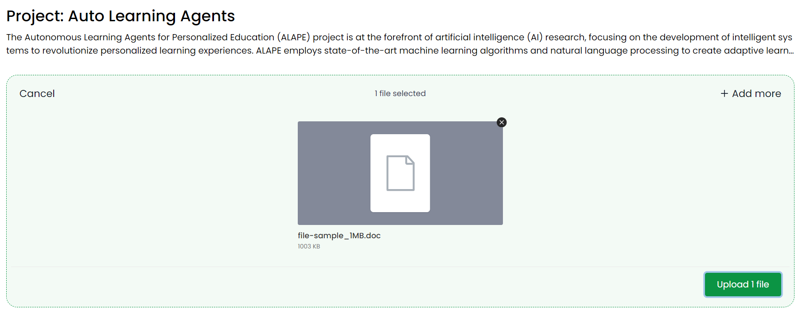
Importing from Local System
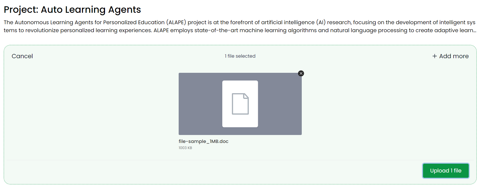
Click on Add More to add more files
to the upload, else click on the Upload File button. You will be
prompted to add a note regarding your uploaded file(s).

Enter your note, save, and continue to
start your upload. You will be able to see your uploaded files at the
bottom of your screen:

To view the details of your uploaded
files, click on the arrow on the File View button. If you click on the
down arrow, you will be able to see files in a hierarchy:

Whereas, if you click on the File View button, you will be able to see a view with file details only:
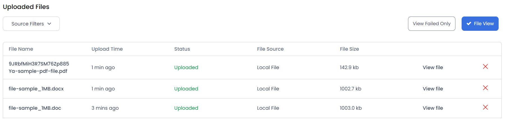
Complete File Uploading
Once you are
satisfied with your uploads, click on the Return to Dashboard button
to go back to your user view.
You will now also see a request created
in your name. You can carry out all the tasks related to this request,
just as you would with any other.
Custodian
Portal Access and
File Upload (Via Local System, Google Drive, DropBox, etc.)
Portal Access
As a custodian, you can access the system once an admin sends you
a request. You will receive an email as shown below:
Click on the Launch Pinpoint CrossCopy button to open the portal. You will be prompted to log in to the system
via OTP.
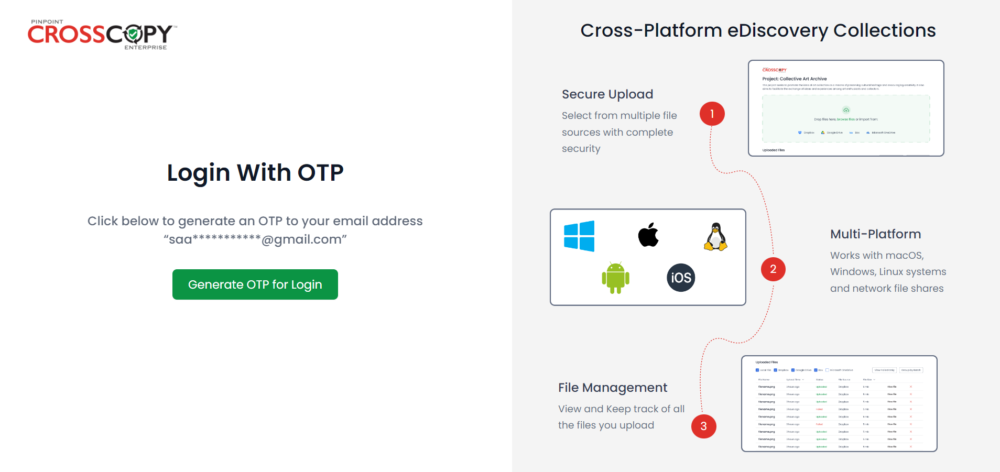
Click on the Generate OTP for Login button. You will receive an OTP in your mailbox, enter that code, and
you will be successfully logged in.
File Upload
After you have logged
in successfully, you will then see a similar screen:
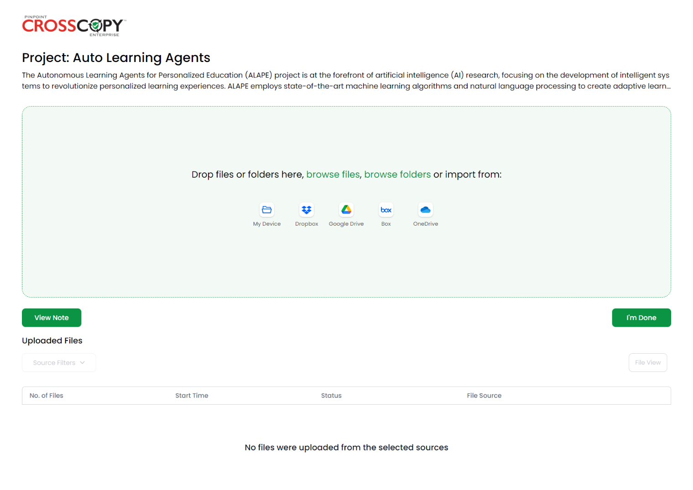
You can either drop files into the
upload box or select any source to upload files from such as My Device,
Dropbox, Google Drive, etc.
Importing from Google Drive
Importing from Local System
Click on Add More to add more files
to the upload, else click on the Upload File button. You will be
prompted to add a note regarding your uploaded file(s).
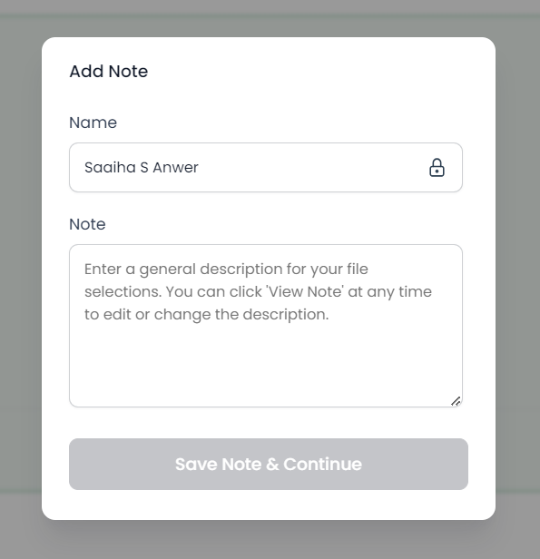
Enter your note, save, and continue to
start your upload. You will be able to see your uploaded files at the
bottom of your screen:
To view the details of your uploaded
files, click on the arrow on the File View button. If you click on the
down arrow, you will be able to see files in a hierarchy:
Whereas, if you click on the File View button, you will be able to see a view with file details only:
After you have uploaded the files, click
on the I’m Done button:
You will see a prompt:
If you wish to upload more files later,
select the Done for now option, else click on Completely Done. Click on Continue.
If you click on the former, you will be able to log
in again and upload more files. Otherwise, you will be permanently logged
out and will not be able to access again, unless the admin generates a new
request.
Resume Uploading Files
If you have closed the window and
wish to resume uploading files, you can follow the same steps as Portal
Access. Go ahead and similarly upload more files as File Upload.
You will be able to see the newly uploaded files along with the previously
uploaded ones in the files list.
Complete File Uploading and Mark As
Done
Once you have uploaded all of the files, click on the I’m Done button to complete your request.
You will see a prompt:
To complete your file uploading, select
Completely Done and click on Continue. You will be logged out of
the portal and would not be able to access it again till the admin
generates a new request for you.